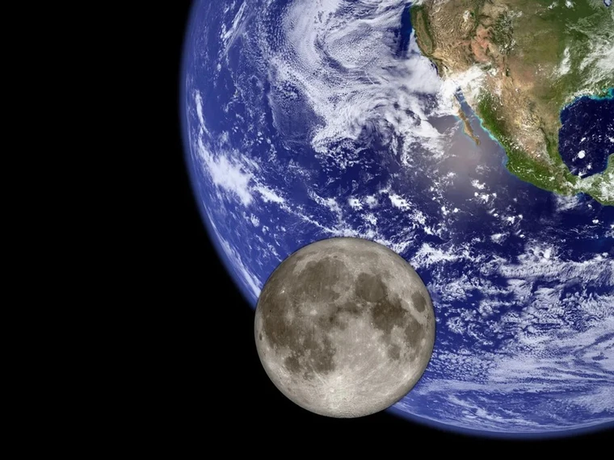
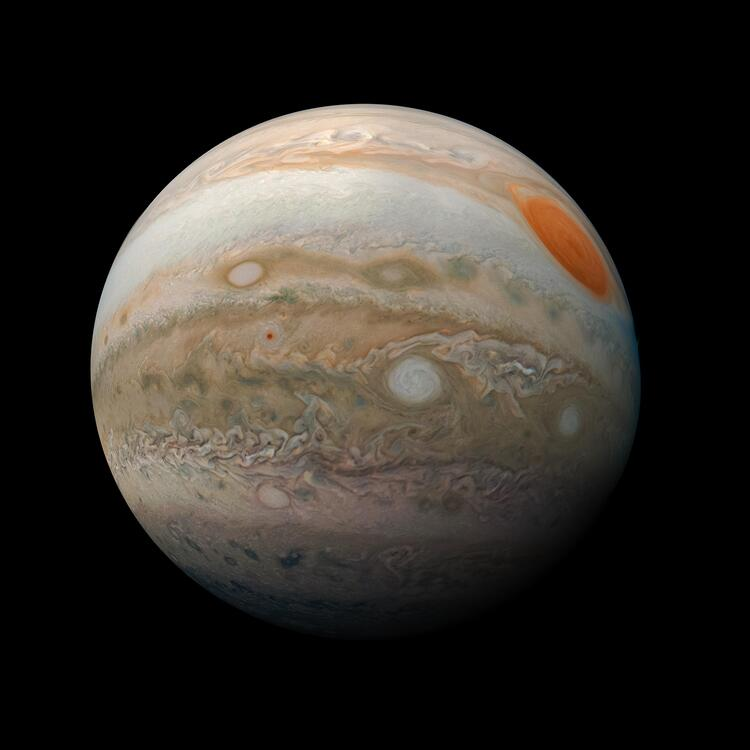
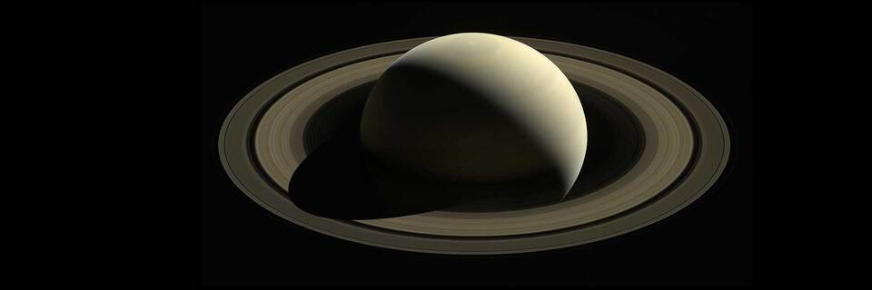

Satélite natural
Lua
Nossa vizinha no espaço tem uma superfície marcada por crateras. Foi o primeiro mundo além da Terra visitado por seres humanos.
A Lua leva aproximadamente 27 dias para dar uma volta ao redor da Terra.
Um convite à descoberta
Há um Universo de descobertas lá fora. Conheça outros mundos e as missões que nos ajudam a ir cada vez mais longe.
Conheça os destinos
01 / Conheça nossa vizinhança
Quatro mundos do Sistema Solar. Quatro motivos para olhar para o céu.
Satélite natural
Nossa vizinha no espaço tem uma superfície marcada por crateras. Foi o primeiro mundo além da Terra visitado por seres humanos.
A Lua leva aproximadamente 27 dias para dar uma volta ao redor da Terra.

Planeta rochoso
O planeta vermelho abriga vulcões e grandes cânions. Robôs exploram seu solo em busca de pistas sobre o passado do planeta.
Um dia em Marte dura cerca de 24 horas e 40 minutos.

Gigante gasoso
O maior planeta do Sistema Solar possui faixas de nuvens e enormes tempestades, como a famosa Grande Mancha Vermelha.
Júpiter leva cerca de 12 anos terrestres para completar uma volta ao redor do Sol.

Gigante gasoso
Seus anéis são formados por incontáveis fragmentos de gelo e rocha. Esse gigante tem luas que também despertam nossa curiosidade.
Saturno leva aproximadamente 29 anos terrestres para completar uma volta ao redor do Sol.
Imagens ilustrativas dos destinos, sem escala de tamanho ou distância entre eles.
02 / Ciência que vai mais longe
Como são os outros mundos? Sondas, robôs e astronautas levam essa curiosidade para além da Terra. Cada missão traz imagens e dados que ajudam a entender nosso lugar no Universo.
Os primeiros passos humanos na superfície da Lua.
O início de uma viagem para estudar Saturno, seus anéis e suas luas.
Um laboratório sobre rodas chega a Marte para investigar seu ambiente no passado.
03 / Aprender explorando
Explore o Universo é um projeto educacional que une astronomia e desenvolvimento web. Um ponto de partida para aprender, fazer perguntas e construir novas descobertas em sala de aula.